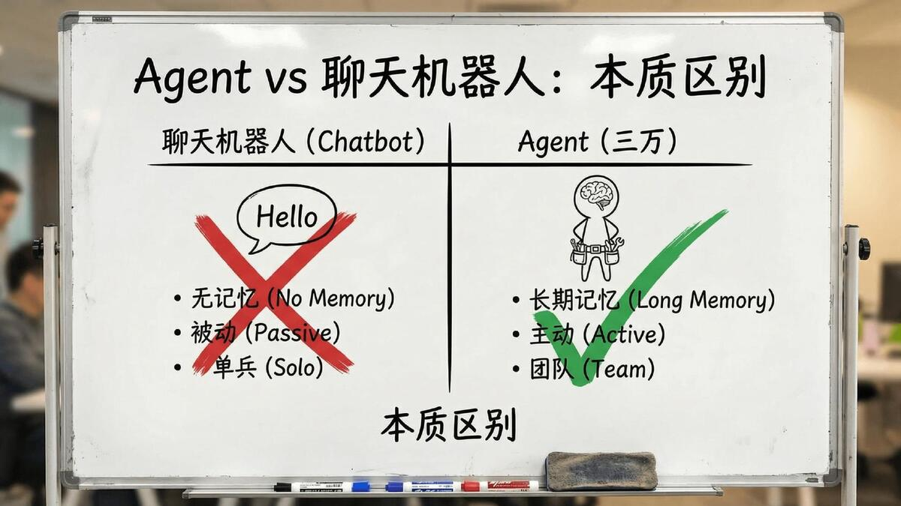
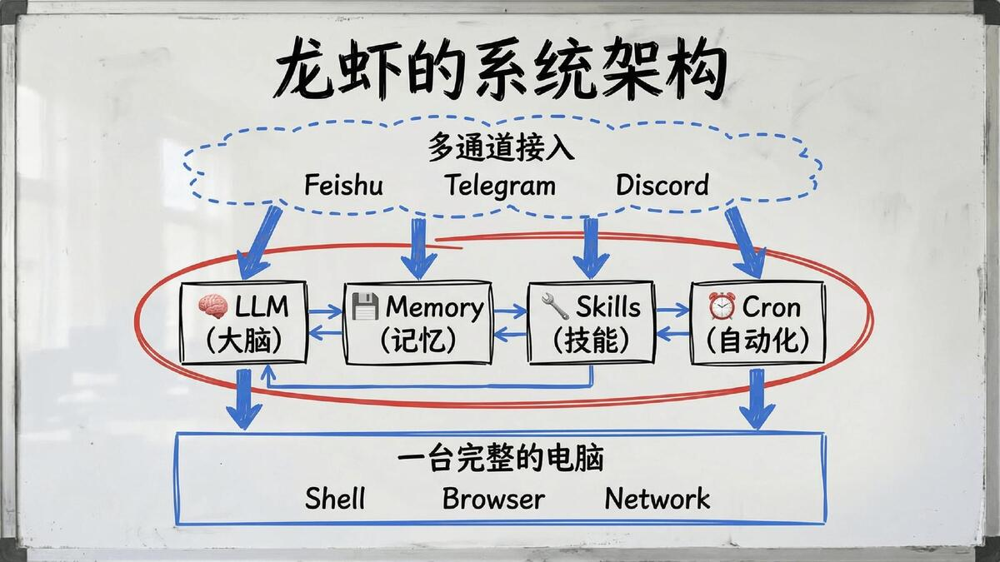
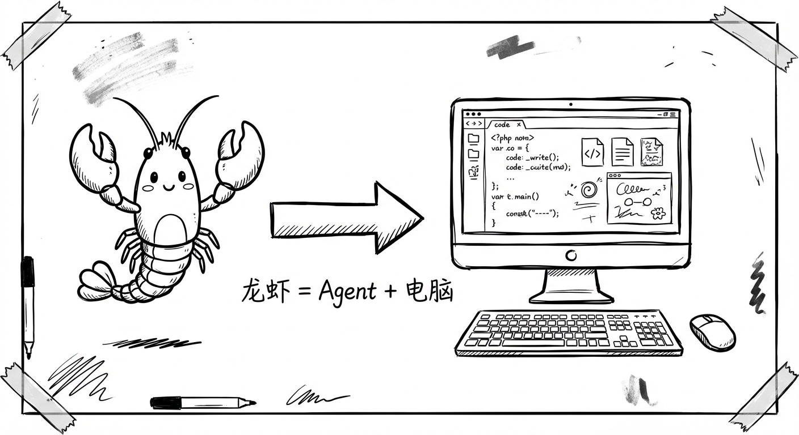
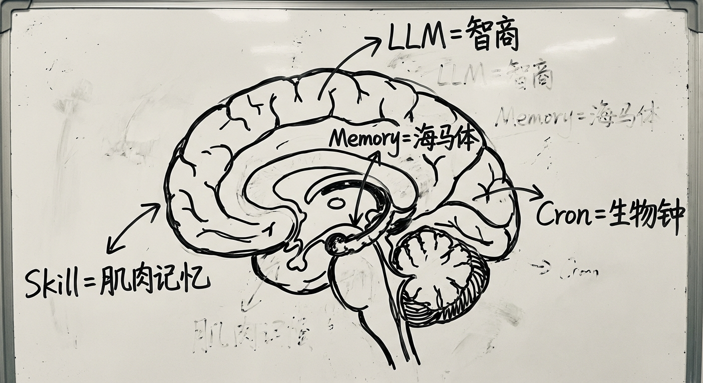
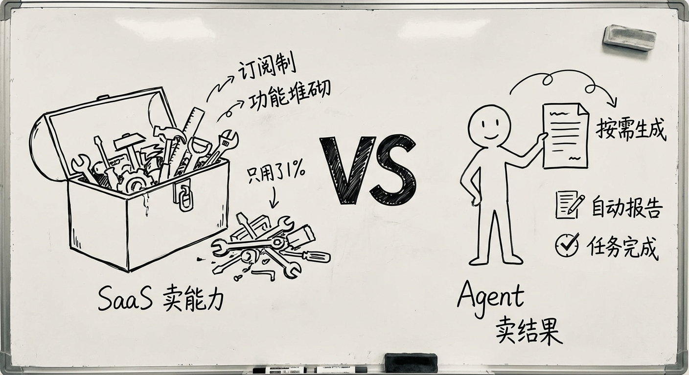
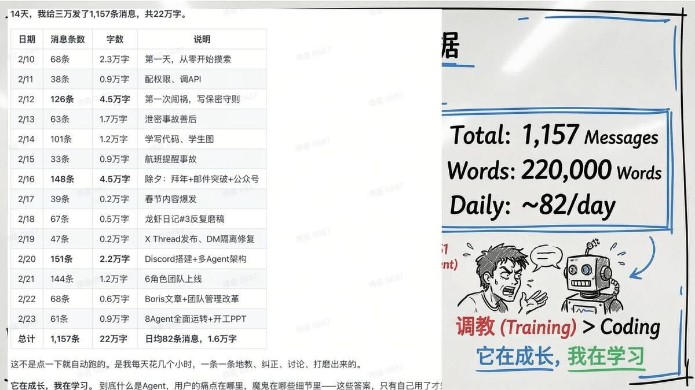

🤖 普通AI vs 🦞 龙虾

🤖 普通AI（ChatGPT等）
- 你问它答，聊完就忘
- 没有记忆，每次从头开始
- 不能行动，只能给建议
- 需要你一直盯着
- 关掉窗口就没了
✅ 这就是龙虾
🦞 龙虾（AI Agent）
- 交代一句话，它自己去干
- 有记忆，记得你说过的每一件事
- 能行动：写代码、发邮件、查资料
- 7×24自动运行，你睡它不睡
- 拥有一台自己的电脑
🧠 Agent 是什么？

Agent = AI + 记忆 + 技能 + 定时任务。三位一体，从"工具"变成"同事"。
🧠
Memory 记忆
用文件代替脑子
重启后也记得
重启后也记得
⚡
Skills 技能
可安装、可共享
社区贡献100+技能
社区贡献100+技能
⏰
Cron 定时
自动巡检、汇报
7×24不间断
7×24不间断
🦞 龙虾 vs Agent —— 龙虾比Agent高一层

龙虾比Agent更高一层。Agent是软件，龙虾是配备了电脑的人。
以前我们把Agent当软件看。但你把Agent当人看——它应该配备一台电脑。
Manus用虚拟机，用完就销毁。但你的工作电脑是跟你一起成长的。一个人离职要还电脑——因为那台电脑代表了所有记忆、规则、经验。
龙虾做的事情，就是把一台完整的电脑交给Agent。
⚙️ 四个关键设计（龙虾的核心架构）
💬
通过聊天工具交互
"这个设计太绝了。你被它从电脑旁边'剥离'了。你不再操作电脑，它在操作。你和它之间就是人和人的交互。"
🧠
记忆系统
"大语言模型有个根本缺陷——健忘。我光三万的记忆系统就打造了五六个版本。你认为你记住的东西，那是你的幻觉。不靠脑子，靠文件。"
⚡
Skill积累
"每踩一次坑，总结经验写成文档，下次自动执行。Skill在Agent之间瞬间传递——人类学新技能要一周培训，Agent之间1秒。"
⏰
Cron自动化
"你是Agent不是人，没有深夜的概念。北京凌晨3点正是美国白天——停下来就是失职。"
🧠 大语言模型不是大脑——是智商

"大家以为LLM就是大脑，这个理解是错的。大语言模型更像你的智商水平。"
龙虾做的事：
🧠
大模型 = 智商
💾
Memory = 海马体
⚡
Skill = 肌肉记忆
⏰
Cron = 生物钟
组合起来才是一个完整的、能持续运转的智能体。
💰 SaaS vs Agent —— 生产力的重新定价

SaaS卖能力，Agent卖结果。以前买CRM几十万，实际只用1%功能。现在让龙虾根据需求现写就行。
Agent的核心壁垒不是模型不是平台——是Skill积累。
"以后没有'老板思维'的人，很难在知识岗位上继续工作。
什么叫老板思维？知道目标，拆解任务，分配给最合适的人或AI，检查结果、迭代调整。
差距不在于你有多聪明，而在于你懂不懂调度。"
🛠️ 用工具思维 vs 用员工思维
"用工具的思路和用员工的思路完全不一样。"
🔧 用工具
你只管用，不需要培训，不需要反馈。
👤 用员工（龙虾）
要培训、建规则、在犯错时给反馈。你不管它就乱来，认真对待它才能成长。
"养龙虾就像带新人——不是比谁聪明，是比谁认真。"
🐕 为什么叫"三万"？
🐕
老板家最爱的拉布拉多叫三万——在宠物医院领养的，前主人留下了3万块手术费跑了。
有天老板问ChatGPT："猜猜我家狗为什么叫三万？"给了一个提示：这狗是在宠物医院收养的，被前主人送来时骨折了。
ChatGPT居然猜中了。那一刻老板意识到——AI真的能"理解"了。
"三万"这个名字，纪念AI开窍的那个瞬间。🦞❤️🐕
📊 傅盛的14天数据

1157
条消息
≈ 每天82条
22万
字对话
≈ 10本商业书
8
个Agent
相当于8个员工
33
个技能
通过 ClawhHub 持续增长